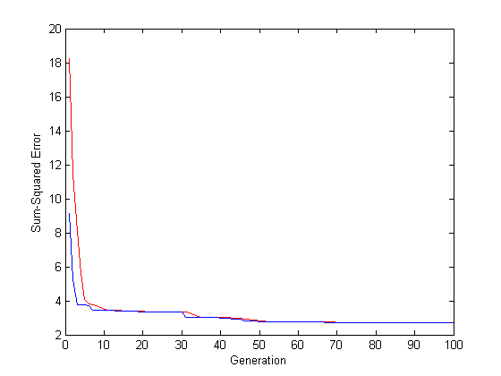
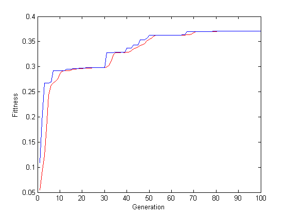

Contents
I. 清除环境变量
clear all
clc
II. 声明全局变量
global p % 训练集输入数据 global t % 训练集输出数据 global R % 输入神经元个数 global S2 % 输出神经元个数 global S1 % 隐层神经元个数 global S % 编码长度 S1 = 25;
III. 导入数据
1. 训练数据
p = [0.01 0.01 0.00 0.90 0.05 0.00;
0.00 0.00 0.00 0.40 0.50 0.00;
0.80 0.00 0.10 0.00 0.00 0.00;
0.00 0.20 0.10 0.00 0.00 0.10]';
t = [1.00 0.00 0.00 0.00;
0.00 1.00 0.00 0.00;
0.00 0.00 1.00 0.00;
0.00 0.00 0.00 1.00]';
2. 测试数据
P_test = [0.05 0 0.9 0.12 0.02 0.02;
0 0 0.9 0.05 0.05 0.05;
0.01 0.02 0.45 0.22 0.04 0.06;
0 0 0.4 0.5 0.1 0;
0 0.1 0 0 0 0]';
IV. BP神经网络
1. 网络创建
net = newff(minmax(p),[S1,4],{'tansig','purelin'},'trainlm');
2. 设置训练参数
net.trainParam.show = 10; net.trainParam.epochs = 2000; net.trainParam.goal = 1.0e-3; net.trainParam.lr = 0.1;
3. 网络训练
[net,tr] = train(net,p,t);
4. 仿真测试
s_bp = sim(net,P_test) % BP神经网络的仿真结果
s_bp =
-3.5126 -3.5060 -3.2632 -3.3107 -0.9767
2.9028 2.6894 3.2065 3.6119 -1.4038
-0.0691 0.0315 -0.1656 -1.2977 -0.8403
-1.6116 -1.4480 -1.9869 -1.8178 -1.2152
V. GA-BP神经网络
R = size(p,1); S2 = size(t,1); S = R*S1 + S1*S2 + S1 + S2; aa = ones(S,1)*[-1,1];
VI. 遗传算法优化
1. 初始化种群
popu = 50; % 种群规模 initPpp = initializega(popu,aa,'gabpEval',[],[1e-6 1]); % 初始化种群
2. 迭代优化
gen = 100; % 遗传代数 % 调用GAOT工具箱，其中目标函数定义为gabpEval [x,endPop,bPop,trace] = ga(aa,'gabpEval',[],initPpp,[1e-6 1 1],'maxGenTerm',gen,... 'normGeomSelect',[0.09],['arithXover'],[2],'nonUnifMutation',[2 gen 3]);
1 0.109209 2 0.190658 3 0.267099 4 5 6 0.269822 7 0.291540 8 9 10 11 0.291545 12 13 0.295580 14 15 16 0.295718 17 18 0.296557 19 0.297269 20 21 22 0.297751 23 24 25 26 0.297895 27 0.297917 28 0.298441 29 30 31 0.328283 32 33 34 35 0.328427 36 37 38 39 40 0.336702 41 42 43 0.342802 44 45 46 0.353833 47 48 49 0.356879 50 0.362435 51 52 53 54 0.362812 55 56 57 0.362830 58 59 60 0.363016 61 0.363030 62 63 64 65 0.363480 66 0.364046 67 0.369529 68 69 70 0.369905 71 72 73 0.369926 74 75 76 0.370293 77 78 79 0.370362 80 0.370623 81 82 83 84 0.370835 85 86 87 88 89 90 0.370838 91 92 0.370840 93 94 95 0.370848 96 97 98 99 100 0.370849
3. 绘均方误差变化曲线
figure(1) plot(trace(:,1),1./trace(:,3),'r-'); hold on plot(trace(:,1),1./trace(:,2),'b-'); xlabel('Generation'); ylabel('Sum-Squared Error');
4. 绘制适应度函数变化
figure(2) plot(trace(:,1),trace(:,3),'r-'); hold on plot(trace(:,1),trace(:,2),'b-'); xlabel('Generation'); ylabel('Fittness');
VII. 解码最优解并赋值
1. 解码最优解
[W1,B1,W2,B2,val] = gadecod(x);
2. 赋值给神经网络
net.IW{1,1} = W1;
net.LW{2,1} = W2;
net.b{1} = B1;
net.b{2} = B2;
VIII. 利用新的权值和阈值进行训练
net = train(net,p,t);
IX. 仿真测试
s_ga = sim(net,P_test) %遗传优化后的仿真结果
s_ga =
0.1573 0.0174 0.2695 0.5721 -0.1021
-0.4109 -0.3180 -0.1192 -0.0439 -0.0117
-1.3240 -1.4057 -0.6639 -0.5992 0.0962
1.2778 1.3342 0.9326 0.6300 0.8503